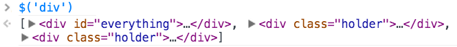
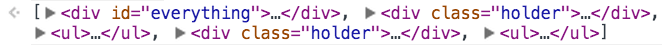
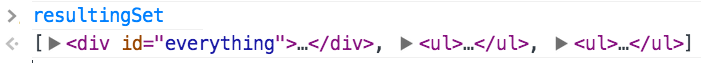

Ordinarily, if we want to manipulate an element in the DOM, we have to use these three methods on the document in JavaScript:
document.getElementByIddocument.getElementsByClassnamedocument.getElementsByTagNamedocument.querySelectordocument.querySelectorAllHowever, these are verbose and pretty inflexible ways to access the DOM. With jQuery, we can use $() to pass in a CSS-style selector and grab an element. Let's modify the <body> of the HTML we made from Getting jQuery to have a variety of elements we can practice selecting:
1 2 3 4 5 6 7 8 9 10 11 12 13 14 15 16 17 18 19 20 21 | <body>
<div id="everything">
<h1>A heading!</h1>
<p>Here's some text!</p>
<p>Here's a second set of text!</p>
<div class="holder">
<ul>
<li>List Item 1</li>
<li>List Item 2</li>
<li>List Item 3</li>
</ul>
</div>
<div class="holder">
<ul>
<li>List Item 4</li>
<li>List Item 5</li>
<li>List Item 6</li>
</ul>
</div>
</div>
</body>
|
With jQuery, we can select elements the same way that we target elements with CSS selectors. For instance, take a look at the following CSS:
1 2 3 4 5 6 7 8 9 10 11 12 13 14 15 16 17 18 19 20 21 22 23 24 | /* Targets all h1 elements and makes them blue */
h1 {
color: blue;
}
/* Targets the element with the id "everything" and turns the background red */
#everything {
background-color: red;
}
/* Targets all elements with the class "holder" and adds a black border */
.holder {
border: 1px solid black;
}
/* Targets all li elements within ul elements and bold them */
ul li {
font-weight: bold;
}
/* Targets p elements coming immediately after an h1 element and makes it green */
h1 + p {
color: green;
}
|
We can use the exact same CSS selector syntax to select elements on the DOM with jQuery. Here's JavaScript code using jQuery's css method to do the same thing as the CSS above:
1 2 3 4 5 6 7 8 9 10 | // Turn h1s blue
$('h1').css('color', 'blue');
// Make the element with id "everything" have a red background
$('#everything').css('background-color', 'red');
// Make all elements with class "holder" have a black border
$('.holder').css('border', '1px solid black');
// Make all li elements inside of ul elements have bold text
$('ul li').css('font-weight', 'bold');
// Makes all p elements immediately following an h1 green
$('h1 + p').css('color', 'green');
|
This means that you can select elements with as complex CSS selectors as you want, and then manipulate them with jQuery. If you wanted to grab the first element inside of a div with the ID "rabbit" that immediately follows an h1 which is the second child of its container element which is the direct descendant of its container element, and turn it blue... you can do that:
1 2 3 4 5 6 7 8 9 10 11 12 13 14 15 16 17 | <body>
<!-- <main> is an HTML5 element similar to a div -->
<main>
<div>
<p></p>
<h1></h1>
<div id="rabbit">
<div>
The target div!
</div>
<ul>
<li>Not what I want to target</li>
</ul>
</div>
</div>
</main>
</body>
|
1 | $('main > div h1:nth-child(2) + #rabbit div:first-child').css('color', 'blue')
|
This is an overly involved (and contrived) example, but it shows you the power of using CSS selectors versus using native JavaScript, which could look something like:
1 2 3 4 5 6 7 8 9 10 11 12 13 14 15 16 17 18 19 20 21 22 23 24 25 26 27 28 29 30 31 32 33 34 35 36 37 38 39 40 41 42 43 44 45 46 47 48 49 | // Get the first <main> element. This technically isn't even correct--
// we should be filtering against all main elements, according to our CSS selector
var main = document.getElementsByTagName('main')[0];
// Get all <div> elements and then filter for direct descendants
var divs = main.getElementsByTagName('div');
var directChildDiv = undefined;
for (var i in divs) {
// If this div is in childNodes, it's a direct child
var index = Array.prototype.indexOf.call(main.childNodes, divs[i]);
// If index == -1, it's not a direct child so cut it out
if (index !== -1) {
directChildDiv = divs[i];
break;
}
}
var directChildDiv = divs[0];
// Grab direct child h1s
var h1s = directChildDiv.getElementsByTagName('h1');
var secondChildH1 = undefined;
h1s = Array.prototype.slice.call(h1s);
for (var i in h1s) {
var index = Array.prototype.indexOf.call(h1s[i].parentNode.childNodes, h1s[i]);
// You would think we would use index 1,
// but nope, we have to account for
// text nodes in the children
if (index == 3) {
secondChildH1 = h1s[i];
break;
}
}
// Let's check if we actually matched anything here
if (secondChildH1) {
// Get the node after this one. Remember we need
// to use + 2 to account for text nodes
var adjacentChild = secondChildH1.parentNode.childNodes[index + 2];
// Check if id is actually 'rabbit'
if (adjacentChild.id == 'rabbit') {
var almostThereDivs = adjacentChild.getElementsByTagName('div');
almostThereDivs = Array.prototype.slice.call(almostThereDivs);
for (var i in almostThereDivs) {
var isFirstChild = Array.prototype.indexOf.call(almostThereDivs[i].parentNode.childNodes, almostThereDivs[i]) == 1;
// Finally set the color!
if (isFirstChild) {
var x = almostThereDivs[i];
x.setAttribute('style', 'color: blue');
}
}
}
}
|
That's pretty awful. Granted, our query is very complex, but we need to repeatedly do things like convert HTMLCollections (types of objects that hold DOM elements, but don't act like regular arrays) into arrays, account for text nodes, and we're still not handling error cases very well or considering different browser implementations. In essence, jQuery makes life easier.
However, this is only one part of jQuery. As a matter of fact, jQuery is utilizing another library, called Sizzle.js, which is a library designed specifically to turn CSS selectors into complex native JavaScript to let you select DOM elements easily.
Since we can use CSS selectors to select elements from the DOM, it follows that if we use the selector div, we are selecting all of the <div> elements on the DOM. You can see this to be the case by going to a webpage with jQuery on it and typing $('div').length() into the DevTools console. length() is a method that will show you the number of elements that you matched with your selector, also called the matched set. The return value of a jQuery selector is this matched set. For instance, if we run $('div') in our DevTools on a page with the HTML above in it, we'll see this array-like representation of DOM elements:

Once we have this matched set, we can add to, remove from, or filter it with a variety of functions.
.add() adds elements to a matched set by passing in a new selector or another matched set. For instance, we could add all the <ul> elements to our matched set of <divs> like so:
1 2 3 4 5 | var matchedSet = $('div');
// .add() returns a new set without altering the old
// set we called .add() from, so we need to reassign it
matchedSet = matchedSet.add('ul');
console.log(matchedSet);
|
The end result looks like this in DevTools:

Alternatively, we could use .add() to put together multiple sets of elements, like so:
1 2 3 | var matchedDivs = $('div');
var matchedUls = $('ul');
var matchedSet = matchedDivs.add(matchedUls);
|
.not() does the opposite of .add(). It will remove any element from the matched set that is matched by the selector you pass to it. For example, let's take the matchedSet jQuery object from the previous examples and exclude all of the elements with the class holder from it:
1 2 | var resultingSet = matchedSet.not('.holder');
console.log(resultingSet);
|
The result looks like this:

There are a number of other methods as well that you can use:
.not()[] functionality of arraysBesides selecting elements directly and then filtering them, you can also find elements related to your selected elements with a number of DOM traversal methods. These methods will work on all of the elements in the matched set simultaneously.
.parent(), but searches through all parents/ancestorsYou can see that jQuery allows you a lot of flexibility in getting towards the elements you want. jQuery also allows you to easily manipulate what you've selected, which we'll learn about next in Adding, Removing, and Moving Elements.